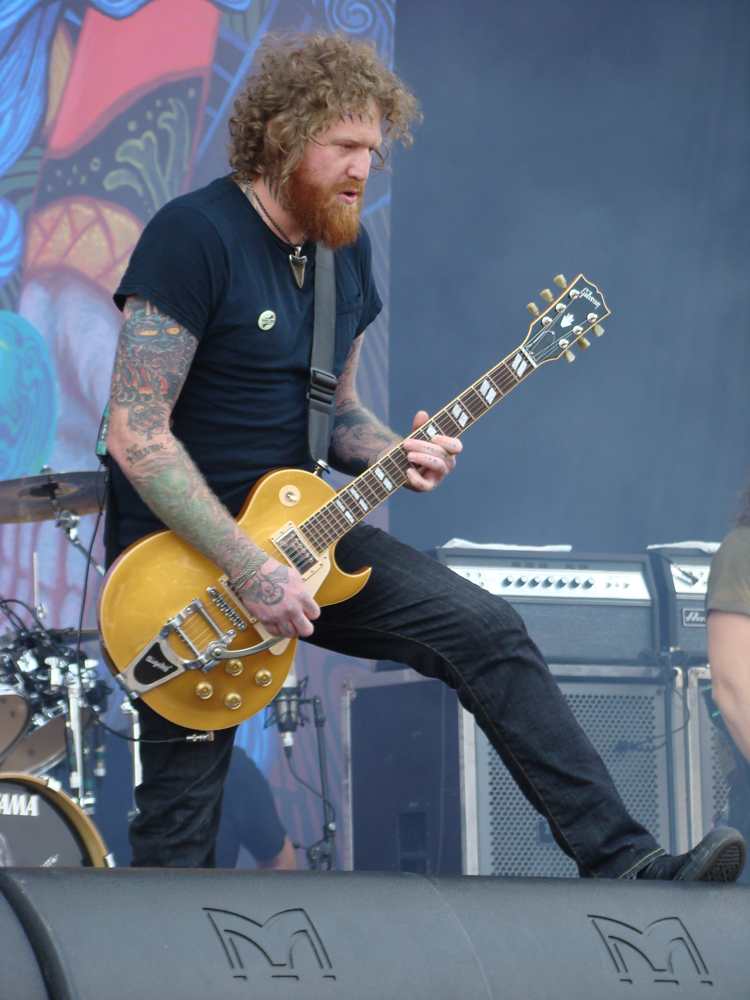
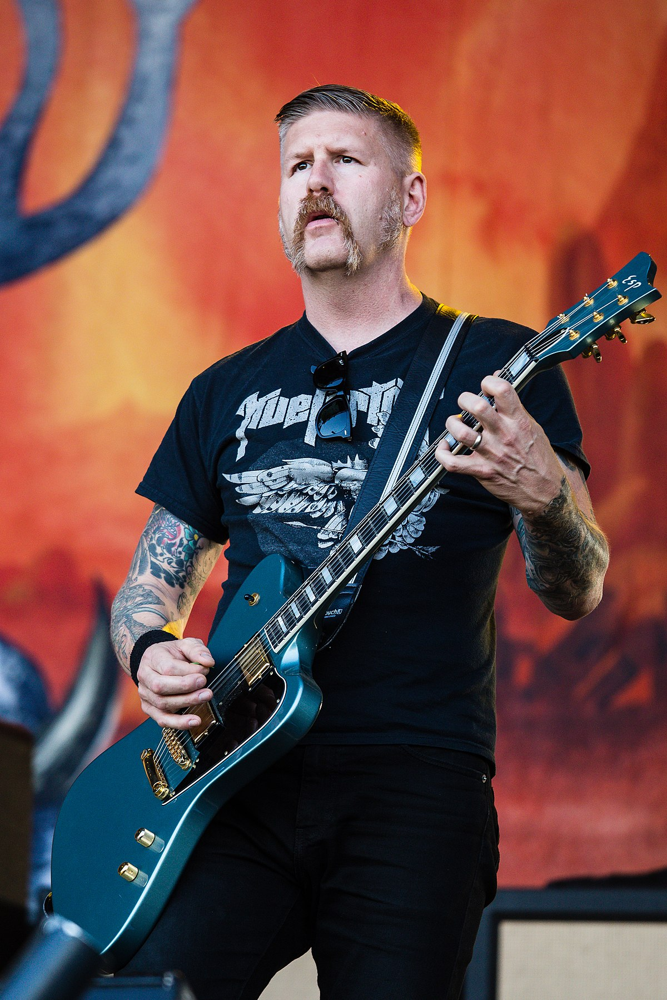
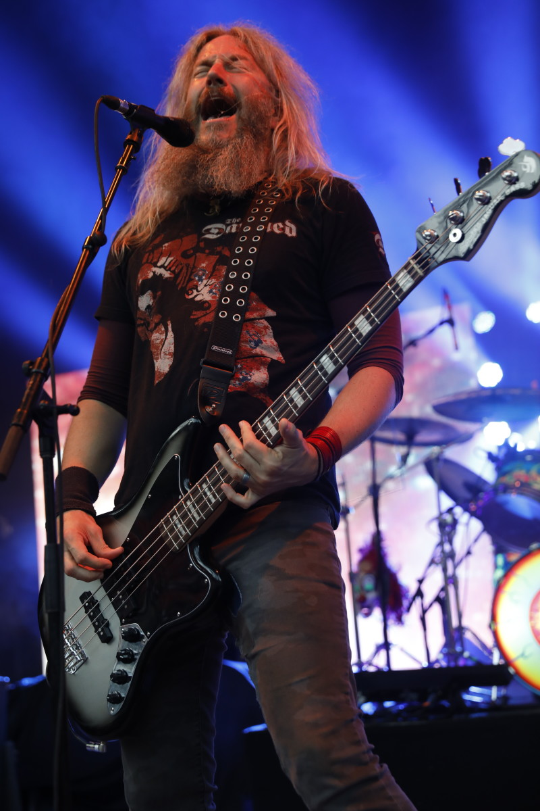

Bandatagok
| Brann Dailor | Dobos és énekes: Dailor a Mastodon dobosa és a harmadik énekes. Az egyik legjobb modern dobosnak tartják, és a zenekar ritmusainak összetett szerkezeteit játssza. Dailor rendkívül színes stílusa nagyban hozzájárul a Mastodon zenei palettájához. | |
| Brent Hinds |  | Gitáros és énekes: Hinds a zenekar egyik alapítója, és kivételes gitárosi és énekesi tehetségéről ismert. Gyakran alkalmazza a slide technikát, és meghatározó a szerepe a Mastodon zenei stílusában. Azonban sajnos a drogproblémái és magánéleti nehézségei miatt többször is kihagyta a turnékat. |
| Bill Kelliher |  | Gitáros: Kelliher a zenekar másik gitárosa, és a Mastodon egyik alapító tagja. Technikailag kiváló gitáros, és az összetett riffek megszólaltatásában is jelentős szerepe van. |
| Troy Sanders |  | Basszusgitáros és énekes: Sanders a zenekar másik alapítója és az egyik fő énekese. Erős, mély hangja jellegzetes a Mastodon dalokban, és az ismert dalokban a dalszövegek egy részét is ő írja. |
A Bandatagok Kedvenc számai
Deezer 100% Mastodon - Breaking Down Some Of Our Favorite Songs
A videó rendelkezik magyar nyelvű átirattal!